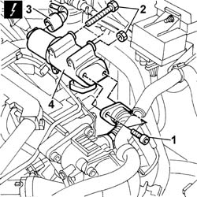

1080C74 E.G.R. VALVE - R.R.
- Path
- Procedures > 10 ENGINE > 1080 EMISSION CONTROL SYSTEM > 1080C MOTOR FOR EGR VALVE SELF-ADJUSTMENT - R.R. > 1080C74 E.G.R. VALVE - R.R.
- Kind
- repair procedure (removal / refitting; the operation number is the code)
- Applies to
- engines: 2.4 JTD 10V; all production periods
- Interactive page
- https://sloeber94.github.io/elrnDB-lThss/en/#/207706
Applies to: all engines; all production periods
 Removing
Removing
 Refitting
RefittingSee in Op. 1016A10
- Disconnect the negative battery terminal.
1. Undo the bolts fixing the expansion joint to the EGR valve.
2. Undo the bolts and the nut fixing the EGR valve to the intake manifold.
3. Disconnect the electrical connection for the EGR valve actuator.
 | Description | Connector |
|---|---|---|
3 | EGR solenoid valve | L030 |
4. Remove the EGR valve from the engine compartment.

Applies to: all engines; all production periods
Refitting
Removing- Fit the EGR valve in the housing on the intake manifold.
- Tighten the nut and the bolts to torque.
 | Value - daNm | Fastening | Component | Ø |
|---|---|---|---|---|
. | - | Nut | EGR VALVE | - |
| Value - daNm | Fastening | Component | Ø |
|---|---|---|---|---|
. | - | Bolt | EGR VALVE | - |
- Connect the electrical connection for the EGR valve actuator.
| Description | Connector |
|---|---|---|
. | EGR solenoid valve | L030 |
- Tighten the bolts fixing the expansion joint to the EGR valve to torque.
| Value - daNm | Fastening | Component | Ø |
|---|---|---|---|---|
. | - | Bolt | VALVE (EGR) EXPANDING JOINT | - |
See in Op. 1016A10
- Connect the negative battery terminal.